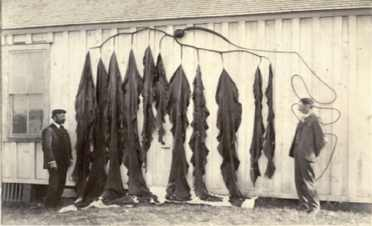

|
|
|
||||
| University of California, Berkeley | |||||
| University Herbarium | Jepson Herbarium | ||||
|  |  |
 |
| W.A. Setchell & H.D. Johnstone, San Pedro, California, late 1800s with Pelagophycus porra |
Paul Claude Silva (1922 - 2014)
Full list of Paul Silva's publications |
Pelagophycus porra, in situ, Point Loma, California |
In 2011, the University Herbarium was awarded a major grant from the National Science Foundation to image and database marine macroalgae (seaweeds) that are known to grow in California, Oregon, or Washington, wherever in the world they occur. These collections are available for viewing at: https://ucjeps.cspace.berkeley.edu/ucjeps_project/public/publicsearch/
In 2014, a collaborative NSF grant (The Macroalgal Herbarium Consortium: Accessing 150 Years of Specimen Data to Understand Changes in the Marine/Aquatic Environment) initiated the imaging and databasing of seaweed collections in herbaria throughout the United States. UC digitized collections from Humboldt State University and Stanford's Hopkins Marine Station, and is currently working on completing the imaging and databasing of its worldwide seaweed collections. To see the results of this ongoing project as they accumulate, see: http://macroalgae.org/portal/index.php
An eFlora project on California Seaweeds has been funded by a grant from the Packard Foundation. This online flora will update Abbott & Hollenberg's Marine Algae of California (1976) and provide a portal for students, ecologists, managers, and the public who wish to learn more about our 750 seaweed species.
|
Copyright
© 2015 Regents of the University of California
Terms of Use — Page last updated March 14, 2015 |
Contact Us
(510) 642-2465 University of California, Berkeley University and Jepson Herbaria 1001 Valley Life Sciences Building #2465 Berkeley, CA 94720-2465 USA |